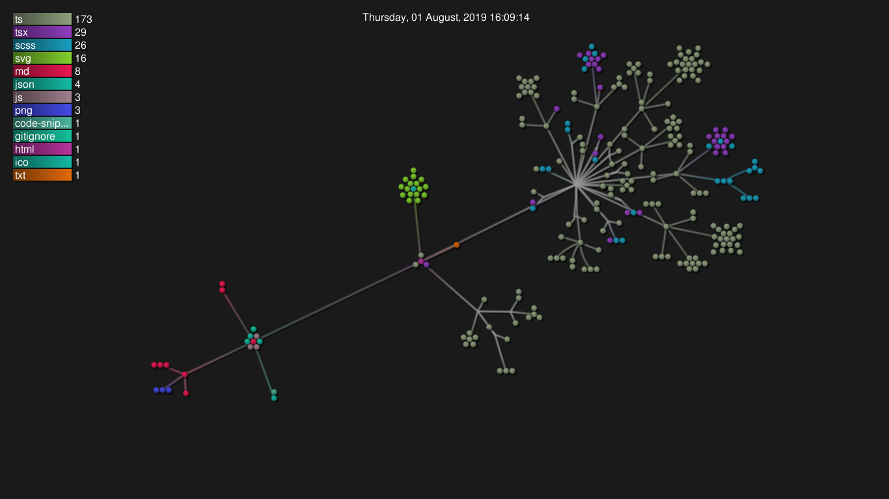

Programul este un simulator de porti logice care permite experimentarea, testarea si cunoasterea ansamblelor de porti logice. Simulatorul suporta circuite integrate, mai multi biti pe acelasi pin, salvarea simulatiilor si suport pentru mai multe limbii.
In folderul src se afla urmatoarele fisiere si foldere:
PerformantaAm ales sa folosesc structura folosita de wavedistrict. Aceasta consta in 2 foldere: common si modules. Acestea contin subfoldere numite dupa functionalitatea pe care o implementeaza. La randul lor, acestea, contin foldere care sunt numite dupa tipul de fisiere continute.
Exemplu:
/modules
/simulationRenderer
/subjects
mySubject.ts
/components
Simulation.tsx
/common
/dom
/helpers
safeQuerSelector.tsReprezentare grafica a fisierelor (fiecare cerc reprezinta un fisier): 
Proiectul este impartit in 18 module distincte:
Activation: se ocupa cu transformarea functiilor de activare in cod javascriptColors: se ocupa de manipularea culorilorCore: contine componentele vizuale de baza ale aplicatieiCreate-simulation: implementeaza procesul de creere a unei simulatiiErros: se ocupa de prinsul si afisatul erorilorInput: se ocupa de utilizarea textului ca inputIntegrated-circuits: se ocupa de compilarea circuitelor integrateInternalisation: se ocupa de afisarea textului in diferite limbiiKeybindings: se ocupa de utilizarea tastaturii ca inputLogic-gate-info: implementeaza pagina cu informatii despre porti logiceLogic-gates: implementeaza pagina de unde se pot adauga porti logiceModals: implementeaza caracteristicile generale folosite de toate dialogurileSaving: se ocupa de salvarea simulatiilorScreen: se oucpua de adaptarea aplicatiei la orice rezolutieSimulation: se ocupa de simularea circuitelorStorage: se ocupa de salvarea datelor in localStorageToasts: se ocupa de stilizarea notificarilor oferite de react-toastify.Vector2: functii de baza care permit folosirea arrayurilor pentru geometria vectorialatake() pentru a astepta doar un anumit numar de valori.dispose() care curata toate subscriptile streamurilor folosite de instanta respectiva si cheama metoda cu acelasi nume pe toate proprietatile care la randul lor folosesc streamuri.index.html ,index.js si splash.css cu o marime totala de doar 18kb. Aceste fisiere au doar rolul de a afisa o animatie de loading pe ecran.main.js este primit, acesta este rulat. El este responsabil pentru:
subiectelor (streamuri care au o metoda numita next) necesare intregii aplicatiimain.js expune o functie asincron numita main care este responsabila pentru functionalitatile enumerate mai sus. Aceasta functie este finalizata doar atunci cand toate aceste actiuni au fost realizate.main din fisierul main.js este terminata, fisierul index.js isi termina munca prin scaderea opacitatii animatiei de incarcare si in final scoaterea acesteia din DOM.Mentionez ca o mare parte din elementele acestei liste sunt libarii folosite in timpul developmentului, doar o mica parte ajungand in buildul final.
push pe ramura master. In al doilea rand, la un moment dat laptopul meu a ramas fara baterie si inchizanduse cateva fisiere au fost corupte. Daca nu as fi folosit git acel incident mi-ar fi distru cateva ore de muncaaproape de utilizator (sau care are pozitia pe axa Z cea mai mare).programarea reactiva (sau bazata pe streamuri). Programarea reactiva este bine cunoscuta deoarece face creerea de memory leaks foarte usoara, asa ca proiectul este scris cu mare grija pentru a prevenii orice posibil incident de acest tip.useObservable() cu ajutorul careia pot renda valorile streamurilor direct cu ajutorul React.programarea reactiva.Aplicatia propriu zisa nu dispune de unit / integration tests. Aceasta a fost testata de aproximativ 30 de persoane.
Mentionez ca am scris teste pentru o mica librarie pe care am folosit-o numita eix-js.
In afara de faptul ca mai multi oameni au testat manual proiectul, typescript m-a ajutat sa detecte aproximativ 75% din erori la compile-time.
I have been testing the Logic Gate Simulator by Adriel. While testing it I found a few bugs, the first bug I found was a problem with the wires. If I started a wire at a component and didn’t connect the wire to another component and then deleted the component the wire was connected to it would make a floating wire that was still connected to my mouse that I couldn’t get rid of. Another bug I ran into was the IC in/out pins where they would overlap because the IC wouldn’t fit there size. The last major bug that I ran into dealt with the pasting and duplicating components. when you pasted in the components they would paste in right on top of what you copied/duplicated. so you wouldn’t be able to get the components that you pasted/duplicated without having to drag each component off. After finding these problems I and Adriel were able to talk about them and he was able to find the problem and fix them efficiently. After Adriel solved each bug it was very easy to go back into the Simulator and start making circuits/ICs again. I tested a variety of circuits like making half-adders and full adders. I also tested different types of flip flops and bit adding circuits. Everything I’ve made worked very well and if something didn’t work Adriel was able to fix it so it worked in the future. After using this Simulator I feel like it has a very good and working concept and I cant wait to see what’s done with it in the future.